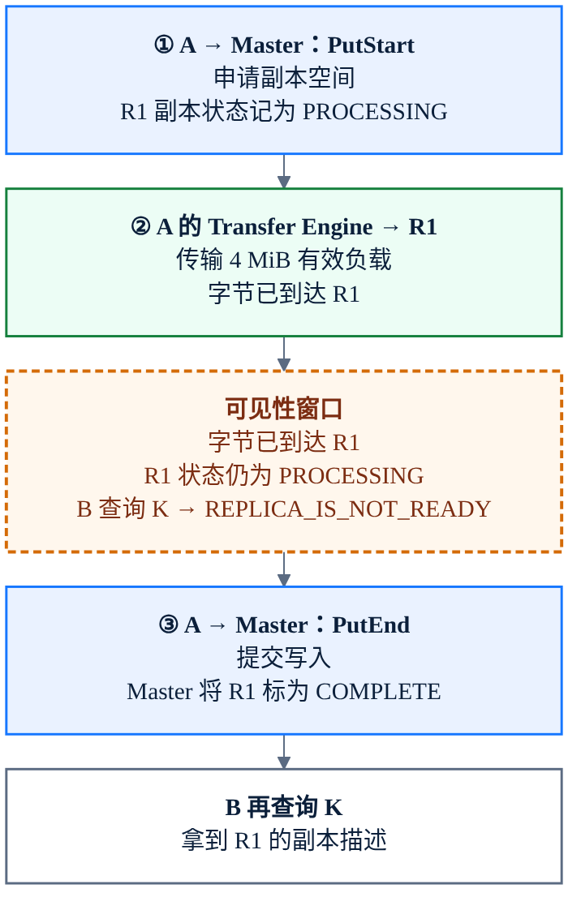

KV 已经写到远端，Mooncake 什么时候才让其他实例读？
摘要：推理实例 A 的数据已经搬到远端 R1，推理实例 B 此时查询仍会得到 REPLICA_IS_NOT_READY。传输完成只说明字节到了 R1；只有 PutEnd 让 Master 把副本从 PROCESSING 翻成 COMPLETE，其他实例才能发现它。
推理实例 A 正在把前缀 KV 写入共享缓存，key 是 K。数据已经开始通过网络搬运，另一台机器上的推理实例 B 恰好查询同一个 key。B 此时能查到对象，却查不到可读副本。
如果系统只看“空间已经分配”，就可能把一份尚未写完的数据交出去。如果只看“字节已经到达”，又可能忽略提交这一步。
本篇讨论的是普通新对象 Put，不混入覆盖写。沿着 Client::Put 走一遍，看清数据搬完、副本提交、读方可见这三个时刻为什么不能合并。
先申请，再搬运，最后提交
一次 Put 可以拆成三个动作：
PutStart：向 Master 申请副本空间。数据传输：把字节写入目标地址。
PutEnd：向 Master 提交写入结果；Master 接受后把副本从PROCESSING翻成COMPLETE。
PutStart 返回的不是“稍后告诉你”，而是已经分配好的副本描述：地址、长度、传输端点。此时副本已经进入 Master 的元数据表，但状态是 PROCESSING。
接下来，A 通过 Transfer Engine 把切片写到目标副本，并等待写入完成。传输完成只说明字节到了远端内存段，不说明这份副本可以被读。
可见性由 Master 在 PutEnd 时打开：它把目标副本从 PROCESSING 翻成 COMPLETE。这是首次写入的正常路径：传输完成、PutEnd 成功，Client::Put 才返回成功。
同 key 已存在时还有另一条路径：PutStart 返回 OBJECT_ALREADY_EXISTS，Client::Put 在传输开始前就把它当成功返回。本文后面会把这两条路径分开。

图注：B 第一次查询在 PutEnd 前，得到 REPLICA_IS_NOT_READY；Master 接受 PutEnd 后，第二次查询才返回 R1 描述。黄色状态条标出传输完成到 PutEnd 的间隔。
把这条路径压成四个时刻：
A 从 Master 拿到 R1，状态
PROCESSING；A 把字节写到 R1；
Master 接受
PutEnd，R1 变成COMPLETE；B 查询 K，拿到可读副本描述。
B 在第 3 步之前查询，看到的是“对象存在，但没有可读副本”；在第 3 步之后查询，才可能拿到 R1。
可读副本是过滤出来的
B 第一次查询时，对象其实已经存在——PutStart 就把它插进了元数据表。但 Master 返回的不是“对象不存在”，而是 REPLICA_IS_NOT_READY。
原因在 GetReplicaList：它遍历副本，只把通过 IsReplicaReadable 的副本放进返回列表。
IsReplicaReadable 要求三件事：
副本状态是
COMPLETE；内存或 NoF 句柄仍然有效；
传输端点没有被标记为失效。
PROCESSING 在第一步就被排除。所以“对象查得到”和“副本读得到”是两件事。
如果整个副本列表为空，Master 还会再分一次：
所有副本都是
REMOVED：返回OBJECT_NOT_FOUND，让调用方放弃；仍有未完成或不可用副本：返回
REPLICA_IS_NOT_READY，值得短暂重试。
分析：这两个错误码的区别，直接决定上层该不该重试。把 REPLICA_IS_NOT_READY 当成对象不存在而放弃，会错过马上就能读到的数据。
同 key 再写：已有状态决定返回值与可见性
普通 Put 遇到已存在的 key，判断发生在 PutStart。只要已有 COMPLETE 副本，或者仍在 discard 超时内，Master 就返回 OBJECT_ALREADY_EXISTS。Client::Put 对这个错误直接返回成功，不再进入后续的数据传输。
这个提前返回有两种常见来源，写方看到的结果相似，读方看到的状态却不同。
上次 PutEnd 已执行，响应丢失
第一次写入的 PutEnd 已经在 Master 执行，响应却在返回途中丢失。对 A 来说，这次调用超时；对 Master 来说，R1 已经是 COMPLETE。
A 重试同一个 key 的 Put。PutStart 发现已有 COMPLETE 副本，返回 OBJECT_ALREADY_EXISTS；Client::Put 把它当成功返回。这次重试传入的缓冲区不参与传输，已有内容也不变。
B 此时查询 K，能拿到 R1 的描述。A 看到的“重试成功”表示“对象已存在”，不是“这次覆盖写成功”。
上次写入仍停在 PROCESSING
第一个写方完成 PutStart 后停住，没有执行 PutEnd 或 PutRevoke。Master 里 K 仍然存在，R1 停在 PROCESSING。
在 discard 窗口内，另一个写方对 K 发起 Put：PutStart 返回 OBJECT_ALREADY_EXISTS，Client::Put 同样当成功返回。第二个写方传入的缓冲区不会写入，R1 仍不可读。B 查询 K，得到的是 REPLICA_IS_NOT_READY。
超过 discard 窗口后，新的 PutStart 才能顶替旧对象，并重新分配副本。旧副本先移入 discarded_replicas_，等到 release 超时才真正释放。顶替不是复用旧空间。
无对象（首次写入正常路径）
写方：
PutStart返回副本描述；传输后PutEnd成功，Client::Put返回成功。本次缓冲区：写入。
读方：
PutEnd前得到REPLICA_IS_NOT_READY；之后返回副本描述。
已有 COMPLETE 副本（含 PutEnd 成功但响应丢失）
写方：
OBJECT_ALREADY_EXISTS；Client::Put返回成功。本次缓冲区：不写入，已有内容不变。
读方：返回副本描述。
PROCESSING，未超过 discard（默认 30 秒）
写方：
OBJECT_ALREADY_EXISTS；Client::Put返回成功。本次缓冲区：不写入，原
PROCESSING仍不可读。读方：得到
REPLICA_IS_NOT_READY。
PROCESSING，超过 discard（默认 30 秒）
写方：
PutStart顶替并返回新副本描述；传输后PutEnd成功则返回成功。本次缓冲区：写入新分配的副本；旧副本进入
discarded_replicas_。读方：新
PutEnd前得到REPLICA_IS_NOT_READY；之后返回新副本描述。
两个超时都从 PutStart 写入的 metadata.put_start_time 起算：
put_start_discard_timeout_sec（默认 30 秒）：超时前，同 key 的新PutStart返回OBJECT_ALREADY_EXISTS；超时后，新PutStart才能顶替旧对象。put_start_release_timeout_sec（默认 600 秒）：旧PROCESSING副本被顶替后先移入discarded_replicas_，到put_start_time + 600 秒才真正释放。
提前返回的路径不会调用 TransferWrite；若启用 object_checksum，本地仍可能计算一次校验值，但它不会写入共享副本。
这些分支只改变成功时分配哪些副本，不改变“key 已存在”的判断。覆盖语义属于 Upsert：它会按已有对象的情况走不同分支，包括同尺寸更新和不同尺寸的丢弃后重分配。把 Put 重试当成覆盖写，是这里最容易犯的错。
提交决策：默认全部成功，双副本可降级
空间申请成功，后续传输仍可能失败。客户端不能把所有申请过的位置都标记为成功，也不能把已完成的一侧一起撤销。
Client::Put 在传输结束后调用 DetermineFinalizeDecision，由它决定 PutEnd 与 PutRevoke 分别作用于哪一类副本。
默认可靠模式下，条件是严格的：
分配到的副本数量满足配置；
已分配副本的传输全部成功。
两者都满足才 PutEnd(ALL)；否则 PutRevoke(ALL)，本次 Put 失败。
双副本模式 FLEXIBLE_DUAL_REPLICA 放宽了要求：
内存与 NoF 两侧都成功：
PutEnd(ALL)；只有内存成功：
PutEnd(MEMORY)+PutRevoke(NOF_SSD)；只有 NoF 成功：
PutEnd(NOF_SSD)+PutRevoke(MEMORY)；两侧都失败：
PutRevoke(ALL)。
所以同一条“Put 成功”，在不同配置下强度不同。默认路径要求分配到的副本全部成功；双副本模式只要求一侧成功。调用方若依赖副本数，应当读配置或指标，而不是假设。
PutRevoke 本身也有限制：它只撤销仍处于 PROCESSING 的目标副本。如果目标类别里已经有非 PROCESSING 的副本（例如 COMPLETE），Master 返回 INVALID_WRITE，而不是误删已完成的数据。这正好要求调用方“提交成功的那一类，撤销失败的那一类”。
总结
对普通新对象 Put，写方的提交时刻是 PutEnd：在此之前，字节即使已经传到 R1，副本仍是 PROCESSING，GetReplicaList 不会返回它；PutEnd 成功后，R1 变成 COMPLETE，读方才可能拿到副本描述。
同 key 再次 Put 是另一条路径。只要已有 COMPLETE 副本或仍在 discard 窗口内，PutStart 返回 OBJECT_ALREADY_EXISTS，Client::Put 直接当成功返回，本次缓冲区不写入。看到“Put 成功”，要区分它表示“首次提交成功”还是“对象已存在”。
源码延伸：Client::Put、PutStart、PutEnd、PutRevoke、GetReplicaList、IsReplicaReadable。版本基线为 v0.3.13.post1。